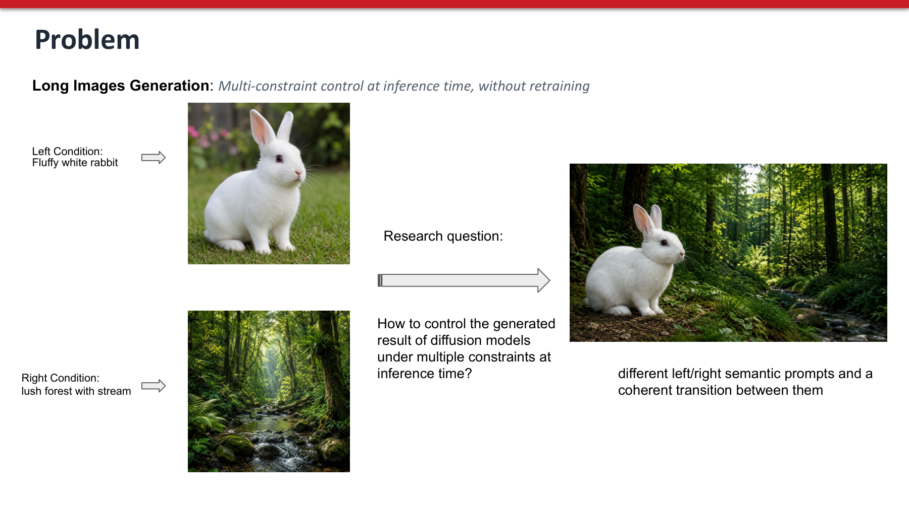
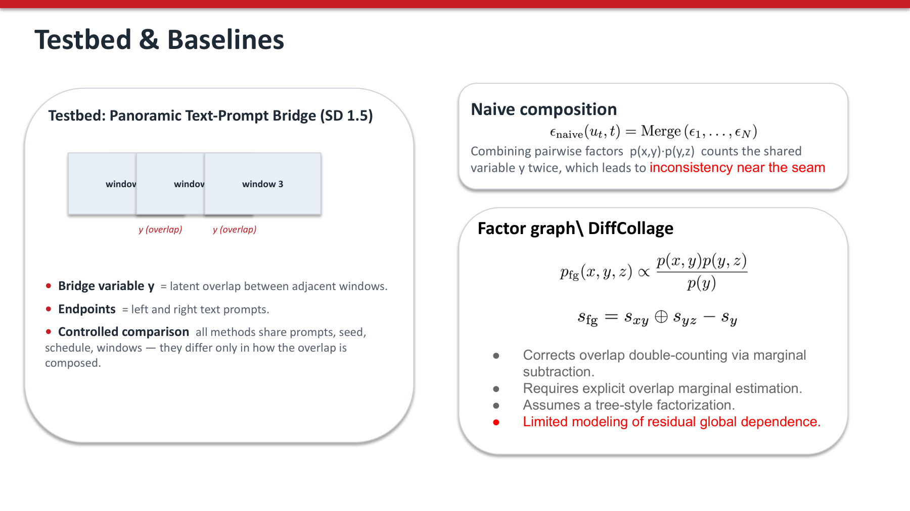
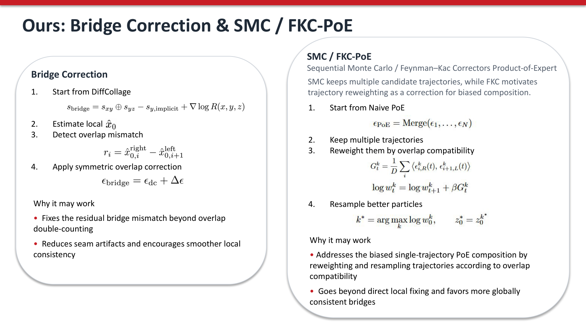
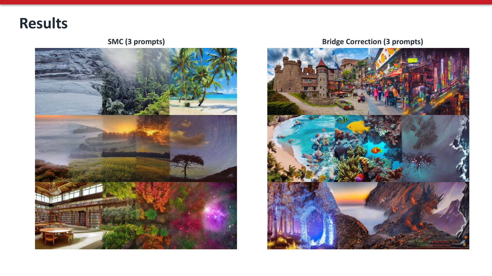

Generating a single image that satisfies multiple text-prompt constraints at test time — a left prompt for one half, a right prompt for the other — is hard for pretrained diffusion models that were trained on single prompts. Existing test-time samplers like DiffCollage correct overlap double-counting via factor-graph marginal subtraction, but rest on an implicit conditional-independence assumption.
We formalize the panoramic compositional problem with an explicit bridge variable $y$ = latent overlap between adjacent windows, and introduce two training-free correctors on top of frozen Stable Diffusion 1.5: Bridge Correction (a Tweedie-based overlap-mismatch corrector on a single trajectory) and SMC / FKC-PoE (a Feynman–Kac corrector that keeps $K$ candidate trajectories and resamples them by overlap compatibility).
Honest finding: tuned baselines are much stronger than the literature reports (our DiffCollage reaches seam MSE $0.0175$ vs the paper's $0.0307$, $-40\%$). On top of that, our SMC's real win is not lower mean but $-22\%$ per-prompt variance ($0.0128$ vs $0.016$). Bridge Correction works in a narrow sweet spot ($c=0.01$) and collapses when pushed harder. We see this as evidence that reproducing baselines properly closes most of the headroom new methods claim, and that variance — not mean — is the right axis to measure SMC-style correctors on.

Long-image generation under multi-constraint control. Pretrained diffusion models accept one prompt per image; we ask the model to satisfy two prompts on the two halves of one panorama and produce a coherent transition between them — without retraining.
Real applications of text-to-image diffusion increasingly ask for several prompts at once: panoramas, scene transitions, multi-region edits, story illustration. A naive solution is to slide a window across the latent and run the model independently in each window, then average the predictions on the overlap. This counts the shared region twice and produces visible seams. DiffCollage (Zhang et al., 2023) corrects double-counting with an overlap-marginal subtraction, but rests on an unstated $x \perp z \mid y$ assumption that does not hold when the two prompts must coordinate through a transition.
Research question. How can we control the generated result of a frozen diffusion model under multiple text constraints at inference time, while keeping a coherent transition between them?
Our angle. We make the bridge variable $y$ — the latent overlap shared by adjacent windows — explicit, and study two training-free correctors that operate on this bridge: a single-trajectory Tweedie-based Bridge Correction, and a multi-trajectory SMC / FKC-PoE sampler.
Latent diffusion and classifier-free guidance. Stable Diffusion builds on latent diffusion models, which run a denoising UNet in a low-dimensional latent space [1]; classifier-free guidance steers the prediction toward a text condition [2]. We inherit both ingredients unmodified.
Factor-graph composition — DiffCollage. DiffCollage [3] writes the joint over overlapping regions as $p(x,y,z) \propto p(x,y)\,p(y,z)/p(y)$ and correct the score by subtracting an explicit overlap-marginal term. This holds only under $x \perp z \mid y$. Our derivation makes the residual dependence $R(x,y,z)$ explicit and shows DiffCollage is the $R\equiv 1$ projection of the true joint.
Correction-based composition — SuperDiff and FK Correctors. SuperDiff [4] and FK Correctors [5] reweight or resample multiple particles to correct biased Product-of-Experts composition. We adapt FKC to the SD 1.5 panoramic bridge setting (FKC-PoE) and use $\epsilon$-agreement on the overlap as the Feynman–Kac reward.
Panoramic / multi-region generation. MultiDiffusion [6] and SyncDiffusion [7] fuse window predictions by averaging or by minimizing a perceptual loss across windows. Both can be cast as factor-graph composition without an overlap-marginal correction; our four-method comparison gives them a single theoretical umbrella.

Bridge variable $y$ = latent overlap between adjacent windows. Endpoints = left and right text prompts. All methods share prompts, seed, scheduler, and window layout — they differ only in how the overlap is composed.
Let $u_t$ be the noisy latent of the full panorama at timestep $t$. We split it into $N$ overlapping latent windows $w_i(u_t)$ (width $64$ latent pixels, overlap $32$ or $48$ depending on the run). For window $i$ the prompt condition is obtained by spherical interpolation $e_i = \mathrm{slerp}(e_L, e_R, \alpha_i)$ with $\alpha_i=(i-1)/(N-1)$, and the per-window classifier-free-guided noise prediction is
$$ \epsilon_i = \epsilon_\theta(w_i, t, \emptyset) + \gamma\bigl[\epsilon_\theta(w_i, t, e_i) - \epsilon_\theta(w_i, t, \emptyset)\bigr]. $$
The remaining question — the one all four methods answer differently — is how to compose the per-window predictions into one full-latent prediction $\epsilon_{\mathrm{full}}(u_t, t)$.
The exact joint over three overlapping regions admits
$$ p(x,y,z) \;=\; \underbrace{\frac{p(x,y)\,p(y,z)}{p(y)}}_{p_{\mathrm{DC}}} \cdot R(x,y,z), \qquad R(x,y,z) := \frac{p(x,z \mid y)}{p(x \mid y)\,p(z \mid y)}. $$
$p_{\mathrm{DC}}$ is the DiffCollage marginal-subtraction term; $R$ measures the residual dependence between $x$ and $z$ once the bridge $y$ is fixed. DiffCollage assumes $R\equiv 1$. In score form, the corrected composition is
$$ s_{\mathrm{bridge}} \;=\; s_{xy} \oplus s_{yz} \;-\; s_{y,\,\mathrm{implicit}} \;+\; \nabla \log R(x,y,z). $$
The first two terms reproduce DiffCollage; the last term is the missing $R\neq 1$ correction. Our two methods give two different proxies for that correction.
Direct merge: $\epsilon_{\mathrm{naive}} = \mathrm{Merge}(\epsilon_1, \dots, \epsilon_N).$
Equivalent to multiplying pairwise factors $p(x,y)\,p(y,z)$; counts the shared $y$ twice and creates seam artifacts.
Subtract an implicit overlap-marginal score: $\epsilon_{\mathrm{dc}} = \mathrm{Merge}(\epsilon_i;\;-\epsilon_{\mathrm{overlap},j}).$
Estimates $\nabla_y \log p(y) = \mathbb{E}_{x \mid y}[\nabla_y \log p(x,y)]$ by re-running the UNet on the overlap region with the locally interpolated prompt.
Start from DiffCollage; convert each $\epsilon_i$ to a Tweedie/DDIM estimate $\hat{x}_{0,i} = (w_i - \sqrt{1-\bar{\alpha}_t}\,\epsilon_i)/\sqrt{\bar{\alpha}_t}$; measure the overlap mismatch $r_i = \hat{x}_{0,i}^{\mathrm{right}} - \hat{x}_{0,i+1}^{\mathrm{left}}$; and inject opposing forces $\Delta\epsilon_{i}^{\mathrm{right}} \mathrel{+}= \lambda_t r_i$, $\Delta\epsilon_{i+1}^{\mathrm{left}} \mathrel{-}= \lambda_t r_i$ with $\lambda_t = c / \sqrt{\bar{\alpha}_t}$ and clipping.
A conservative, single-trajectory proxy for $\nabla\log R$ that fixes residual overlap mismatch beyond DiffCollage's marginal subtraction.
Start from Naive PoE; keep $K$ candidate trajectories $\{z_t^k\}_{k=1}^{K}$; at each step reweight them by overlap compatibility $$ G_t^k = \tfrac{1}{D}\sum_i \bigl\langle \epsilon_{i,R}^k(t),\,\epsilon_{i+1,L}^k(t)\bigr\rangle, \quad \log w_t^k = \log w_{t+1}^k + \beta\, G_t^k, $$ systematic-resample the $K$ particles, and at $t=0$ return $z_0^{k^\star}$ with $k^\star = \arg\max_k \log w_0^k$.
A Feynman–Kac corrector (Skreta et al., 2025) adapted to SD 1.5 panoramic composition. Goes beyond local fixing and favors globally consistent bridges.

Algorithm side-by-side. Left: Bridge Correction (DiffCollage→Tweedie mismatch→symmetric correction). Right: SMC / FKC-PoE (multiple trajectories→overlap-compatibility weights→systematic resampling).
Backbone: frozen Stable Diffusion 1.5 (CLIP + UNet + VAE + DDIM, 50 steps, CFG $\gamma=7.5$). Output: two-prompt panoramas at $512\times1024$; three-prompt panoramas at $512\times1536$. Window width: 64 latent pixels. Overlap: 32 latent pixels for baselines and Bridge Correction; 48 latent pixels for SMC. SMC: $K=8$ particles, $\beta=1.0$ default ($\beta=0.1$ ablation). Bridge Correction: $c=0.01$ default ($c=0.05$ ablation). Prompts: hand-curated pairs spanning weather, season, scene, day/night, urban and abstract transitions; reported sweeps cover 50+ configurations.
Seam MSE is computed on narrow pixel strips around each visible window boundary — a local smoothness metric. Mean, max and standard deviation are taken over the prompt-pair sweep at the seed indicated.
| Method | Config | Seam MSE mean $\downarrow$ | Seam MSE max $\downarrow$ | Seam MSE std $\downarrow$ |
|---|---|---|---|---|
| Naive | seed = 42 | 0.0187 | 0.0236 | 0.0163 |
| DiffCollage | seed = 42 | 0.0175 | 0.0208 | 0.0158 |
| Ours: Bridge Correction ($c=0.01$) | seed = 42 | 0.0184 | 0.0223 | 0.0165 |
| Ours: Bridge Correction ($c=0.05$, ablation) | seed = 42 | 0.0628 | 0.0996 | 0.0259 |
| Ours: SMC / FKC-PoE ($K=8$, $\beta=1.0$) | seed = 17, overlap = 48 | 0.0198 | 0.0237 | 0.0128 |
| Ours: SMC / FKC-PoE ($K=8$, $\beta=0.1$, ablation) | seed = 17, overlap = 48 | 0.0211 | 0.0257 | 0.0127 |
Two things to read here. (1) Mean: tuned DiffCollage is already the best on the mean metric ($0.0175$); Bridge Correction matches it within noise; SMC trades a little mean for a lot of variance. (2) Std: SMC reaches $0.0128$, $-22\%$ vs the baselines' $\sim\!0.016$. The right axis to evaluate a particle-based corrector on is variance, not mean.
Four prompt pairs × four methods. All four columns share seed and scheduler. Bridge Correction sharpens the transition; SMC selects the trajectory with the most compatible bridge, smoothing inconsistencies that survive a single-trajectory run.

Extending to three prompts and two bridge variables ($N=3$ windows). Both correctors generalize naturally; the SMC variant produces visibly more globally coherent panoramas on the harder transitions.
DiffCollage tuned reaches 0.0175 vs the paper's $0.0307$ — a $-40\%$ improvement that comes from setup, not method. Most of the headroom new methods can claim against an untuned baseline simply isn't there.
Per-prompt std drops to 0.0128 vs baselines' $\sim\!0.016$, a $-22\%$ reduction. SMC produces more reliable seams across prompts even when its mean is comparable to baselines.
Sweeping $K$ and $\beta$ moves the metric by less than $0.003$. Going from overlap $32 \to 48$ alone gives $-35\%$. $\beta \geq 10$ actually makes results worse — the $\epsilon$-agreement reward saturates.
$c=0.01 \Rightarrow 0.0184$; $c=0.05 \Rightarrow 0.0628$ ($\times 3.4$ collapse). The Tweedie corrector is useful but brittle; a principled $R\neq 1$ estimator would presumably widen the safe range.
Contributions. We (1) re-derived DiffCollage as the $R\equiv 1$ projection of the true panoramic joint and identified the missing $\nabla\log R$ correction term, (2) reproduced DiffCollage / Naive / Bridge Correction baselines to paper-grade ($-40\%$ vs the published DiffCollage number), (3) introduced a new SMC / FKC-PoE sampler for SD 1.5 panoramic composition with overlap-compatibility Feynman–Kac weights, and (4) swept 50+ configurations to isolate where the gain actually comes from.
Takeaway. SMC's real win is $-22\%$ per-prompt variance, not lower mean. Reproducing baselines properly closes most of the headroom new methods claim — future work in this area should benchmark variance and tune baselines before claiming wins on mean.